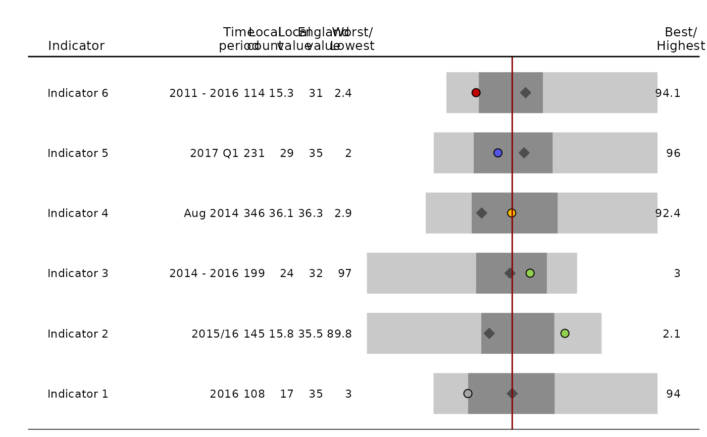
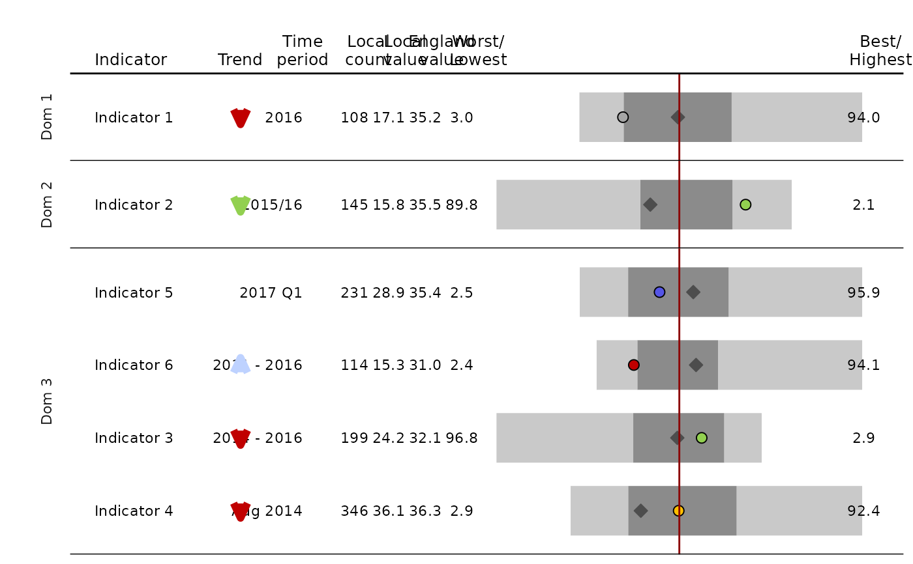

Returns ggplot of spine chart
Usage
area_profiles(
data,
value,
count,
area_code,
local_area_code,
indicator,
timeperiod,
trend = NA,
polarity,
significance,
area_type,
cols = "fingertips",
median_line_area_code = "E92000001",
comparator_area_code = NA,
bar_width = 0.75,
local_point_shape = 21,
local_point_outline = "black",
comparator_point_shape = 23,
comparator_point_outline = "gray30",
comparator_point_fill = "gray30",
relative_point_size = 1,
relative_text_size = 1,
header_positions = c(-1.83, -1.13, -0.53, -0.35, -0.25, -0.15, -0.05, 1.05),
header_labels = c("Indicator", "Trend", "Time\nperiod", "Local\ncount",
"Local\nvalue", "England\nvalue", "Worst/\nLowest", "Best/\nHighest"),
indicator_label_nudgex = -0.075,
domain = no_domains,
relative_domain_text_size = 1,
show_dividers = "none",
datatable = TRUE,
datatable_line_height = 0.6,
dps = 1,
percent_display = 0.25,
arrow_length = 1,
arrow_thickness = 2,
arrow_head_length = arrow_length/3,
arrow_head_angle = 25,
horizontal_arrow_multiplier = 1
)Arguments
- data
a data frame to create the spine chart from. The data frame should contain records for all area types included in the chart (eg, if plotting for County & UA with a comparator of region and a median line for national, the data frame should contain records for all of these data). The minimum field requirements in the data frame are; value, count, area_code, indicator, timeperiod, polarity, significance, area_type. See below for the definitions of these fields
- value
unquoted field name for the field containing the values to be plotted
- count
unquoted field name for the field where the count (numerator) is stored. This is provided to the accompanying data table
- area_code
unquoted field name for the field where area codes are stored (local_area_code, median_line_area_code and comparator_area_code, if using, should all exist in this field)
- local_area_code
string; the code of the area whose data is being presented
- indicator
unquoted field name for the field of the field containing the indicator labels. Take care as errors will occur where indicator labels are the same but data exist for multiple sub-categories (for example, sex or age)
- timeperiod
unquoted field name for the field of the time period field. This gets used in the accompanying data table
- trend
unquoted field name for the field of the trend field; if the user doesn't want to display trend information then leave this incomplete and amend the header_labels argument by replacing the "Trend" header with "". Text within this field should contain one of the following words to control the arrows that are displayed; "decreasing", "increasing", "no significant change", "could not be calculated". The text within this field should contain one of the following words to control the colour; "better", "worse", "no significant change". If none of these words appear in the string, the words "increasing" or "decreasing" will be used to colour the arrows in different shades of blue
- polarity
unquoted field name for the field containing the polarity information (currently only handles "Not applicable", "RAG - Low is good", "RAG - High is good", "BOB - Blue orange blue")
- significance
unquoted field name for the field describing the statistical significance for that indicator. This determines the colour of the point within the spine for the area. Colours are built in for the following significances; 'Better', 'Same', 'Worse', 'Not compared', 'None', 'Higher', 'Similar', 'Lower'. Use the cols argument to colour other significance values
- area_type
unquoted field name for the field containing area type information. This ensures the vertabra are only plotted for the same area types as the local_area area type (eg, when plotting a spine chart for County & UA areas, regions and national area types will be removed)
- cols
named character vector for the cols that will be applied to the significance field. The names should contain all of the levels in the significance field of the data frame. Defaults to the Fingertips colours
- median_line_area_code
string; area code for the median line. Defaults to "E92000001" (England)
- comparator_area_code
string; area code for the comparator point. Defaults to NA
- bar_width
numeric value; the distance between bars (0 to 1)
- local_point_shape
numeric value; shape type for local area point (defaults to 21, circle). See ggplot2 shape types for different values
- local_point_outline
string; control colour of the outline of the local point in the spine chart
- comparator_point_shape
numeric value; shape type for regional area point (defaults to 23, diamond). See ggplot2 shape types for different values
- comparator_point_outline
string; control colour of the outline of the regional point in the spine chart
- comparator_point_fill
string; control the fill colour of the regional point in the spine chart
- relative_point_size
numeric value; control the size of the points on the spine chart
- relative_text_size
numeric value; control the size of the text in the accompanying table
- header_positions
numeric vector; used to adjust columns of data table if they are overlapping. The final value shouldn't be less than 1. Must have a length of 7, if not using the trend argument, or 8 otherwise. Defaults to c(-1.83, -1.13, -.53, -.35, -.25, -.15, -0.05, 1.05)
- header_labels
character vector; labels used for the titles of the columns for a data table. Must have a length of 7, if not using the trend argument, or 8 otherwise. Defaults to c("Indicator", "Trend", "Time period", "Local count","Local value", "England value", "Worst/Lowest","Best/Highest")
- indicator_label_nudgex
number; nudge the placement of the indicator label in the x direction. Negative values nudge to the left
- domain
unquoted field name for the field describing the grouping of the domains if wishing to split the spine chart into domains
- relative_domain_text_size
numeric; control the text size for the domain labels (if include.domains = TRUE) relative to 1
- show_dividers
string; whether to display horizontal lines between indicators. Values can be "all" or "outer". Any other value will not generate lines
- datatable
logical; default = TRUE, display data table alongside spine chart
- datatable_line_height
number; height of wrapped lines in the data table
- dps
number; number of decimal places to be displayed in the data table. The default is 1. Set to NA if this should be the same as the input data
- percent_display
number between 0 and 1; the percentage of values that needs to exist for a spine to display. Default is 0.25
- arrow_length
number to control the length of the trend arrow
- arrow_thickness
number to control the thickness of the trend arrow
- arrow_head_length
number to control the length of the arrow head
- arrow_head_angle
number to control the angle of the arrow head
- horizontal_arrow_multiplier
number to scale horizontal trend arrows. A value below 1 will shorten the arrows
Details
The function draws a bar chart (which is the spine) and then plots the data table (if datatable = TRUE) using geom_text. The bar chart is always plotted between 0 and 1 on the x scale, which isn't visible in the output. The column locations in the data table are controlled by the header_positions argument. To adjust the length of the bars in the visualisation, amend the header_positions argument. The more negative the first value of the vector that goes into header_positions, the more condensed the bar part of the visualisation will be.
This function filters for the area type that is the same as your local area type and then calculates the "vertebra" from those data. Therefore, if you are comparing outputs with those seen on the Fingertips website, ensure you perform the same preprocessing. For example, some profiles display spine charts where small areas, such as Isles of Scilly, are removed before the spine is produced.
Examples
## An example with differing decimal places for individual indicators and no trend
library(dplyr)
#>
#> Attaching package: ‘dplyr’
#> The following objects are masked from ‘package:stats’:
#>
#> filter, lag
#> The following objects are masked from ‘package:base’:
#>
#> intersect, setdiff, setequal, union
df <- create_test_data() %>%
mutate(Value = case_when(
grepl("2$|4$|6$", IndicatorName) ~ round(Value,1),
TRUE ~ round(Value, 0)))
full_p <- area_profiles(df,
value = Value,
count = Count,
area_code = AreaCode,
local_area_code = "AC122",
indicator = IndicatorName,
timeperiod = Timeperiod,
polarity = Polarity,
significance = Significance,
area_type = AreaType,
median_line_area_code = "C001",
comparator_area_code = "PAC12",
datatable = TRUE,
relative_domain_text_size = 0.75,
relative_text_size = 1.2,
bar_width = 0.68,
indicator_label_nudgex = -0.1,
show_dividers = "outer",
header_positions = c(-1, -0.7, -0.44, -0.35, -0.25,
-0.15, -0.05, 1.08),
header_labels = c("Indicator", "",
"Time\nperiod",
"Local\ncount","Local\nvalue",
"England\nvalue",
"Worst/\nLowest","Best/\nHighest"),
dps = NA)
full_p

## An example with domains and non-default indicator ordering
df <- create_test_data()
label_order <- c(1, 2, 4, 3, 6, 5)
df <- df %>%
mutate(IndicatorName = factor(IndicatorName,
levels = paste("Indicator", label_order)))
p <- area_profiles(df,
value = Value,
count = Count,
area_code = AreaCode,
local_area_code = "AC122",
indicator = IndicatorName,
timeperiod = Timeperiod,
trend = Trend,
polarity = Polarity,
significance = Significance,
area_type = AreaType,
median_line_area_code = "C001",
comparator_area_code = "PAC12",
datatable = TRUE,
relative_domain_text_size = 0.75,
relative_text_size = 1.2,
bar_width = 0.68,
indicator_label_nudgex = -0.1,
show_dividers = "outer",
header_positions = c(-1, -0.7, -0.53, -0.35, -0.25,
-0.15, -0.05, 1.05),
domain = Domain
)
p
